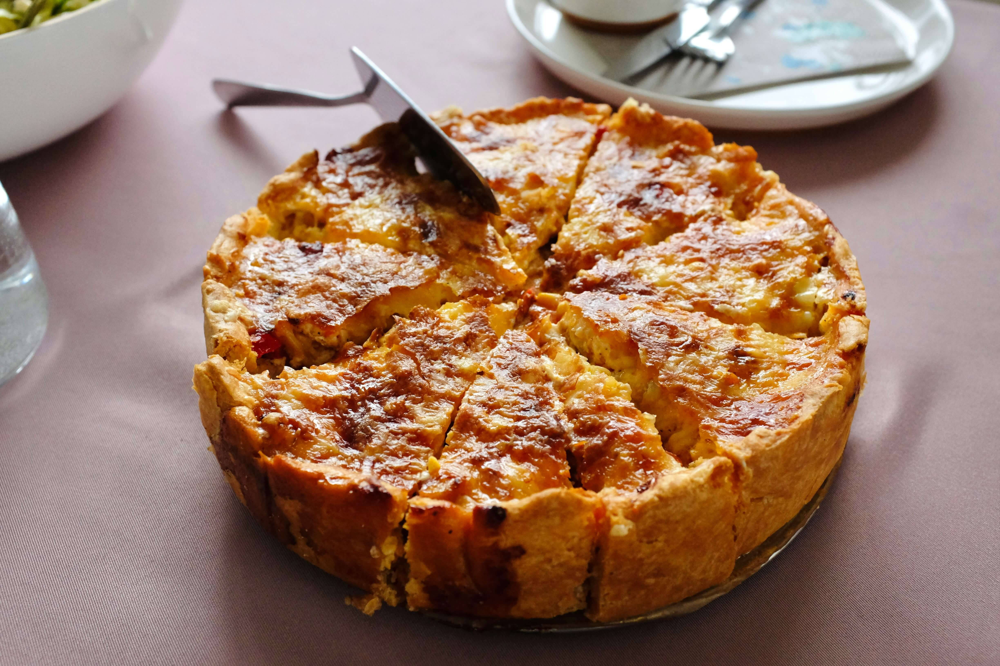
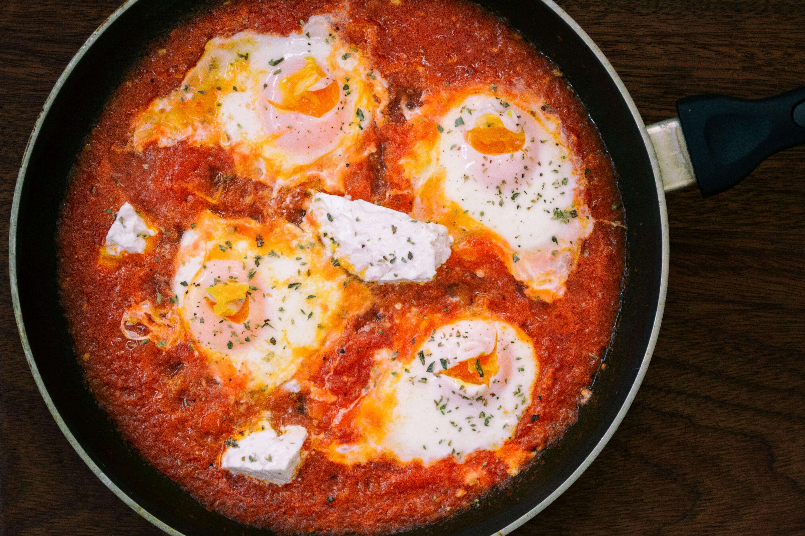
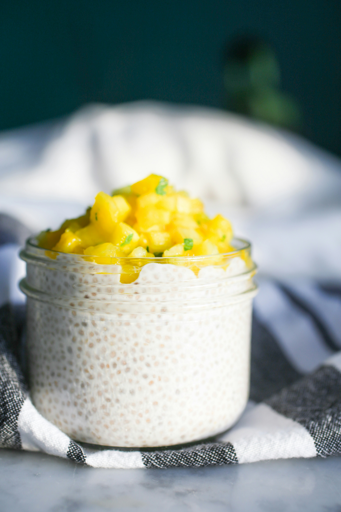

Składniki
- 3 łyżki płatków owsianych górskich
- 1 łyżka otrębów (owsiane lub pszenne)
- 1 łyżeczka nasion chia
- 1 łyżeczka siemienia lnianego mielonego
- 1 łyżka pestek dyni lub słonecznika
- 1 łyżka posiekanych orzechów (np. włoskich, laskowych lub migdałów)
- 1–2 łyżki jogurtu naturalnego gęstego (np. typu greckiego, skyr)
- Szczypta cynamonu lub gorzkiego kakao
Przygotowanie
- Wymieszaj płatki owsiane z otrębami, chia, siemieniem, pestkami i orzechami.
- Dodaj jogurt oraz owoce, wsyp cynamon i opcjonalny słodzik.
- Dobrze wszystko wymieszaj i odstaw na kilka minut, by nasiona napęczniały.
Ważne!
- Unikaj nocnych owsianek (overnight oats):długie moczenie płatków (szczególnie drobnych lub błyskawicznych) zwiększa ich indeks glikemiczny, co może prowadzić do większego skoku cukru po posiłku.
- Zadbaj o źródło białka:owsianka przygotowana tylko na wodzie lub mleku roślinnym bez dodatku białka (np. kokosowym, ryżowym) jest niewystarczająca – warto dodać jogurt naturalny, skyr, odrobinę twarogu lub odżywkę białkową bez cukru.
- Dodaj zdrowe tłuszcze: np. orzechy, pestki, siemię lniane, nasiona chia – spowalniają one wchłanianie węglowodanów i poprawiają sytość.
- Dodawaj cynamon: wykazuje działanie obniżające ładunek glikemiczny posiłku i może wspierać wrażliwość insulinową.
- Wybieraj pełnoziarniste płatki górskie: unikaj błyskawicznych – te mają wyższy IG i gorszy wpływ na glikemię.
- Zadbaj o objętość błonnika: dodatek otrębów, siemienia, chia – zwiększa sytość i poprawia reakcję glukozową po posiłku.
Zobacz też:

Quiche

Szakszuka

Pudding chia